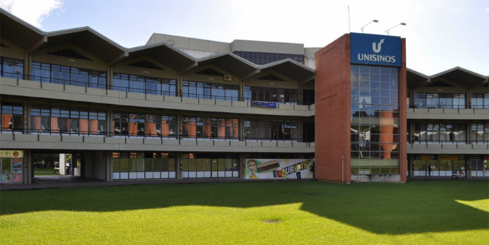
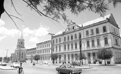
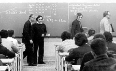
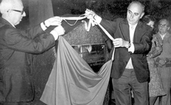
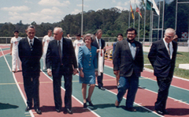
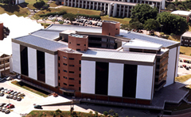
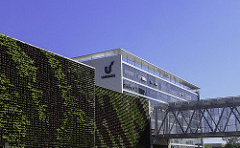

Encontre novas soluções para os desafios do amanhã.
Uma universidade de excelência acadêmica e em busca da internacionalização
Uma Universidade com mais de 50 anos de história, a Unisinos é uma das maiores instituições privadas do Brasil, com mais de 96 mil alunos diplomados e cerca de 23 mil alunos matriculados nos cursos de graduação e pós-graduação das modalidades de ensino Presencial, Híbrido e a Distância (EAD). Fortalecida em seu ecossistema de Ciência, Tecnologia e Inovação (CT&I), a Instituição explora as fronteiras da tecnociência para construir o amanhã da sociedade.
Os cursos são ancorados em seis Escolas que buscam a internacionalização, a transversalidade e a promoção do debate teórico-metodológico nos processos de produção do conhecimento e formação profissional. São elas: Escola de Humanidades; Escola de Gestão e Negócios; Escola de Saúde; Escola de Direito; Escola Politécnica e Escola da Indústria Criativa. Com 26 Programas de Pós-Graduação, a Unisinos mantém e desenvolve parcerias estratégicas com empresas e universidades do Brasil e do mundo. São cerca de 175 parcerias com mais de 30 países, que fortalecem a pesquisa e permitem o intercâmbio científico de alunos e pesquisadores.
O Portal de Inovação da Unisinos conecta a Universidade ao mercado e transforma pesquisa e tecnologia em inovação. Os Institutos Tecnológicos são estruturados com equipamentos de alta tecnologia e atuam como parceiros de empresas e organizações, contribuindo para a competitividade e sustentabilidade do estado e do país. O Parque Tecnológico São Leopoldo - Tecnosinos fomenta novas economias na área de tecnologia, orientadas pelo empreendedorismo inovador, e auxilia o desenvolvimento sustentável da região, gerando cerca de 8.000 empregos diretos. A Responsabilidade Social Universitária também é trabalhada pela Unisinos, por meio de seus 16 Projetos Sociais, que atendem mais de 13 mil pessoas em condições de vulnerabilidade social.
A Universidade é mantida pela Associação Antônio Vieira (ASAV), mantenedora de 21 unidades no Brasil. São instituições de ensino e entidades de assistência social, dentre as quais estão a Universidade do Vale do Rio dos Sinos (São Leopoldo e Porto Alegre/RS) e os colégios Anchieta (Porto Alegre/RS), Catarinense (Florianópolis/SC), Medianeira (Curitiba/PR) e a Escola Padre Arrupe (Teresina/PI). Orientadas pelos preceitos Jesuítas, as cinco instituições de ensino somam, aproximadamente, 40 mil alunos. A ASAV também presta assistência a projetos nos estados do Rio Grande do Sul, Paraná, Mato Grosso, Rondônia, Amazonas e Pará.
Fundada em 4 de novembro de 1899, a ASAV é uma entidade sem fins lucrativos, vinculada à Companhia de Jesus, e atua como uma das faces civis da Província dos Jesuítas do Brasil. Ela tem por finalidade a promoção e o desenvolvimento da educação, a difusão da fé e ética cristãs preconizadas pela Companhia de Jesus.
A História
49 anos de história. A Unisinos, ao longo desses anos, sempre buscou o desenvolvimento, a educação continuada e a capacidade de inovação. Conheça os acontecimentos mais importantes da história da universidade desde a sua criação, em 31 de julho de 1969.

1969
Em 31 de julho de 1969, Dia de Santo Inácio de Loyola, foi autorizado oficialmente o funcionamento da Universidade do Vale do Rio dos Sinos – Unisinos. O primeiro reitor da jovem instituição foi o padre João Oscar Nedel.

Década de 70
A abertura da Avenida Unisinos, com 2,5km de extensão, foi feita em 1973, ligando a BR-116 ao campus. No ano seguinte, iniciou-se a gestão do reitor Padre Theobaldo Frantz e foi realizada a inauguração oficial da atual sede da universidade. Em 1979, foi inaugurado o Terminal Rodoviário, na Avenida Unisinos.

Década de 80
Em 1981, um grande incêndio, com causas desconhecidas, destruiu o pavilhão B da antiga sede da universidade, no centro de São Leopoldo. Dois anos depois, a Unisinos foi reconhecida pela portaria 453. No ano de 1986, iniciou-se a gestão do reitor Aloysio Bohnen, que confirmou seu nome quatro vezes em um mandato de 20 anos ininterruptos. No mesmo ano, a universidade outorgou o título de Doutor Honoris Causa ao poeta Mário Quintana, na época com 80 anos.

Década de 90
Em 1990, foi instalado um novo plano de contabilidade, que gerou um orçamento mais transparente na universidade. No ano seguinte, foi publicado o Estatuto da Universidade. Em 1992, um grande impulso na informatização marcou a instituição, com a instalação de 324 computadores e 90 impressoras. No ano seguinte, foi criada a Editora Unisinos e promovido o primeiro curso de MBA Executivo em Gestão Empresarial. Em 1994, em comemoração aos 25 anos da Unisinos, foram inaugurados o Anfiteatro Pe. Werner e a Pista Atlética.

O ano de 1995 foi marcado pelo aumento significativo no número de mestres e doutores, e pela criação oficial do Instituto Unilínguas. No ano seguinte, foram concluídas as ampliações do Centro de Ciências Tecnológicas e do Complexo Desportivo. Em 1997, um financiamento de 27,5 milhões de reais do Programa de Modernização e Qualificação do Ensino Superior, destinou 13,5 milhões ao prédio da nova Biblioteca. A criação do Pólo de Informática em São Leopoldo foi o destaque do ano de 1998. Em 1999, foi criado, dentro do Pólo de Informática, a Unidade de Desenvolvimento Tecnológico (Unitec). Neste mesmo ano foi implementado o Complexo de Teledifusão e Tecnologia Educacional, com destaque para a criação da TV Unisinos e do Programa Gênesis.
Anos 2000
Em 2000, foi consolidada a operação da Linha Circular, entre a Estação Unisinos e o campus. No ano seguinte, a universidade recebeu a concessão, pela Capes, da nota 5 para os programas stricto sensu em Ciências da Comunicação e Jurídicas, e em 2002, os Programas de pós-graduação foram plenamente aprovados pela Capes. A criação da Diretoria de Ação Social e Filantropia e a ampliação no número de bolsas de estudos para alunos carentes, marcaram 2004. Neste mesmo ano, a Unisinos obteve a Certificação ISO 14001 de Gestão Ambiental, sendo a primeira universidade da América Latina, e a quinta no mundo, a receber a certificação.

Em 2005, o Pe. Marcelo Fernandes de Aquino é nomeado novo reitor da Unisinos. Neste mesmo ano, iniciou-se o funcionamento do Portal Minha Unisinos. No ano seguinte, a universidade foi escolhida pela maior empresa de software de gestão empresarial no mundo, a alemã SAP, para sediar sua primeira filial no Sul do país, e a Escola de Design Unisinos é fundada em Porto Alegre. Em 2007, as publicações Enciclopédia do Design e Aparados da Serra – a obra e a vida do Pe Balduíno Rambo, foram destaques. No mesmo ano é inaugurado o Laboratório de Fisioterapia. O ano de 2008 trouxe o reconhecimento do MEC, como a melhor universidade particular da Região Sul do país. No ranking dos melhores MBAs do Brasil, a Unisinos foi a única universidade da Região Sul que obteve destaque. A exposição Vida e Obra do Pe Balduíno Rambo é inaugurada no Aeroporto Internacional Salgado Filho, marcando as comemorações do aniversário da instituição. O lançamento da Revista Magis e a nova versão do J.U Online renovam a comunicação institucional. Em 2009, ano de seu aniversário de 40 anos, novamente a universidade recebe o reconhecimento do MEC como melhor universidade da Região Sul.
Década de 2010
O vestibular de verão de 2010 marcou a inauguração dos polos de educação a distância, expandindo a atuação da universidade para toda região Sul do país. No mesmo ano, o prédio que abriga a Escola de Design recebeu reformas e passou a sediar o campus Porto Alegre, ampliando a oferta de cursos presenciais na capital gaúcha. Em setembro, o Parque Tecnológico Tecnosinos foi eleito o melhor do Brasil. O Tecnosinos abriga cerca de 70 empresas nacionais e estrangeiras e evidencia a inovação vinculada à tecnologia, estratégia de gestão praticada pela Unisinos.
No início de 2011 foi inaugurada a Escola Superior de Saúde, parceria da universidade com o Hospital Mãe de Deus. Em julho, a HT Micron inaugurou a Sala Limpa, marco que dá início a pré-operação da joint-venture no Tecnosinos. Ainda este ano entrou no ar o Novo Portal Unisinos, desenvolvido de acordo com os mais contemporâneos conceitos de ambiente web. O site abre espaço aos seus usuários, criando um canal mais interativo com a universidade. Em 2013, entra no ar o Portal Unisinos remodelado, com melhorias de processo e tecnologias. E para o ano de 2013, a Unisinos concretiza um movimento iniciado em 2010, que é o de dividir os seus campos do conhecimento em escolas: Humanidades, Saúde, Indústria Criativa: Comunicação, Design e Linguagens, Direito, Gestão e Negócios e Politécnica. O objetivo é um só: integrar, cada vez mais, os cursos de graduação da universidade.
Em 2014, a Unisinos criou os Institutos Tecnológicos, preparados para prestar serviços técnicos e dar suporte para empresas e organizações em suas atividades de pesquisa. Os itts dividem-se em cinco: itt Fuse, itt Chip, itt Fossil, itt Nutrifor e itt Performance. Estruturados com equipamentos de alta tecnologia, os institutos são amparados pelo NITT Unisinos – Núcleo de Inovação e Transferência de Tecnologia e atuam como parceiros de empresas e organizações, contribuindo para a competitividade e sustentabilidade do estado e do país. Em junho, foi inaugurada a HT Micron no Campus São Leopoldo. A maior produtora de encapsulamento e testes de semicondutores da América Latina faz parte do Tecnosinos – Parque Tecnológico de São Leopoldo. No mesmo mês foi lançado um novo multicanal de informações da universidade, o site Notícias Unisinos.

Em 2015, a Unisinos iniciou a construção do Campus Porto Alegre que teve duração de 22 meses. Em dezembro de 2016, foi realizada a entrega das chaves do Campus. Um complexo com prédios, que engloba Laboratórios, localizados na Av. Luiz Manoel Gonzaga, 744 (local usado anteriormente pelo campus), a Torre Educacional, o Teatro (nº 1600) e o Espaço Unisinos (nº 1500), ambos localizados na Av. Nilo Peçanha.
O ano de 2017 trouxe o reconhecimento do MEC, pela quinta vez consecutiva, como a melhor graduação privada da Região Sul do país. Em maio, as pesquisas ganham um espaço ainda mais relevante na Unisinos com a inauguração de dois espaços inovadores no Campus São Leopoldo. O Instituto Tecnológico de Semicondutores da Unisinos - itt Chip, criado em 2011, e o Portal de Inovação, evolução do projeto pioneiro “Aceleradora de Projetos”, implementado em 2013. Os espaços possibilitam a criação de projetos e dão suporte a empresas do ramo de tecnologia.
Em 2018, padre Marcelo Fernandes de Aquino, atual reitor, foi reconduzido ao cargo por mais quatro anos, até 2021. Também tomaram posse o vice-reitor, padre Pedro Gilberto Gomes, os pró-reitores, o chefe de gabinete, os diretores das Unidades Acadêmicas e de Apoio e os decanos das Escolas Unisinos. O ano de 2018 também marca a expansão dos polos de educação a distância. Além de São Leopoldo e Porto Alegre, a Unisinos está presente nas cidades de Bento Gonçalves, Cachoeirinha, Campo Bom, Canoas, Caxias do Sul, Estrela, Montenegro, Passo Fundo, Santa Maria e Taquara. Com o EAD, a universidade conta também com polos em Florianópolis (SC), Curitiba (PR), Rio de Janeiro (RJ), São Paulo (SP), Teresina (PI), Belo Horizonte e Santa Rita do Sapucaí (MG).